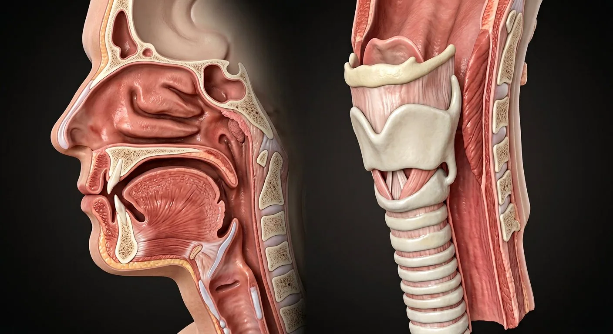

How this part of the body works
Midsagittal cut from nasal conchae to tracheal rings — including the parts you cannot see from outside: sinuses, adenoid, vocal folds.
Read the anatomy, part by part
These 9 structures correspond to the chapter’s regional illustration or schematic. Each entry separates location, function and a clinical point.
Nasal cavity & conchae
Three conchae turbo-charge the surface area.
What it doesWarms, humidifies and filters inspired air.
Clinical connectionDeviated septum + turbinate hypertrophy = blocked nose.
Paranasal sinuses
Frontal, maxillary, ethmoid, sphenoid air spaces.
What it doesLighten the skull; resonate voice; humidify.
Clinical connectionSinusitis pain follows the sinus walls — maxillary = cheekache.
Nasopharynx & adenoid
Posterior nasal chamber with lymphoid adenoid.
What it doesAir passage; immune sampling in childhood.
Clinical connectionAdenoid hypertrophy causes snoring and glue ear in kids.
Oropharynx
Behind the mouth, tonsils at its sides.
What it doesShared food–air corridor; speech resonance.
Clinical connectionOSA collapse happens here during sleep.
Epiglottis
Elastic leaf above the larynx.
What it doesFlips to cover the larynx during swallowing.
Clinical connectionEpiglottitis: drooling, stridor — an airway emergency.
Larynx
Thyroid + cricoid cartilages housing the folds.
What it doesVoice production and airway protection.
Clinical connectionHoarseness >3 weeks needs laryngoscopy.
Vocal folds
Ligament + muscle under mucosa, glottis between.
What it doesVibrate to phonate; close to protect lungs.
Clinical connectionRecurrent laryngeal nerve palsy paralyses a fold.
Cricoid & thyroid cartilages
Signet-ring cricoid; shield-like thyroid.
What it doesComplete ring keeps the airway open; muscle anchor.
Clinical connectionCricoid is the landmark for cricothyroidotomy.
Trachea
16–20 C-shaped rings, membranous back.
What it doesConduit to the bronchi; mucociliary escalator.
Clinical connectionForeign bodies lodge at the carina or right main bronchus.
Deeper structures and tissue layers
These 11 additional entries give anatomical context. They are deliberately not assigned a photographic pin on the regional image.
Superior nasal concha
Small upper lateral nasal projection of ethmoid bone.
What it doesIncreases mucosal surface and directs airflow toward olfactory region.
Clinical connectionNot the inferior concha, which is a separate bone.
Olfactory epithelium
Specialized mucosa near roof of nasal cavity and superior concha.
What it doesDetects odorants through olfactory neurons.
Clinical connectionDamage can impair smell.
Pharyngeal tonsil
Lymphoid tissue of nasopharyngeal roof/posterior wall.
What it doesProvides mucosal immune surveillance.
Clinical connectionEnlargement may obstruct nasal breathing.
Palatine tonsil
Lymphoid organ in tonsillar fossa of oropharynx.
What it doesSamples swallowed and inhaled antigens.
Clinical connectionNearby tonsillar vessels matter in surgery.
Pyriform recess
Mucosal gutter lateral to laryngeal inlet in hypopharynx.
What it doesChannels swallowed material around larynx.
Clinical connectionForeign bodies can lodge here.
Arytenoid cartilages
Paired pyramidal cartilages articulating with cricoid lamina.
What it doesMove vocal processes to open/close glottis.
Clinical connectionRecurrent laryngeal nerve injury limits movement.
Corniculate cartilages
Small cartilages atop arytenoid apices.
What it doesSupport aryepiglottic folds.
Clinical connectionUseful endoscopic landmarks.
Vestibular folds
Superior laryngeal mucosal folds above true vocal folds.
What it doesHelp protect lower airway.
Clinical connectionNot the principal sound-producing folds.
Posterior cricoarytenoid
Intrinsic laryngeal muscle from posterior cricoid to arytenoid.
What it doesOnly muscle that abducts true vocal folds.
Clinical connectionBilateral dysfunction threatens airway patency.
Cricothyroid muscle
Muscle between cricoid and thyroid cartilages.
What it doesTenses vocal folds to increase pitch.
Clinical connectionSupplied by external branch of superior laryngeal nerve.
Recurrent laryngeal nerve
Vagal nerve ascending beside trachea and esophagus into larynx.
What it doesSupplies most intrinsic laryngeal muscles and sensation below folds.
Clinical connectionVulnerable in thyroid and mediastinal disease.
Five questions about Upper airway
Short answers grounded in the structures described above. Use the illustrated guide for anatomical context.
What is the path of air through the upper airway?
Air enters the nose or mouth, passes through the pharynx and larynx, then moves down the trachea toward the bronchi.
What does the epiglottis do during swallowing?
The epiglottis is one structure involved in protecting the laryngeal entrance during swallowing; coordinated movement of the larynx and vocal folds also matters.
What is the nasal cavity & conchae?
Three conchae turbo-charge the surface area. Function: Warms, humidifies and filters inspired air.
Where is the nasopharynx & adenoid located?
Posterior nasal chamber with lymphoid adenoid. Function: Air passage; immune sampling in childhood.
What is the function of the epiglottis?
Function: Flips to cover the larynx during swallowing. Elastic leaf above the larynx.
Related anatomy guides
Follow these connected structures and body systems in the illustrated atlas.
 Cranial nervesTwelve pairs leave the brain directly — smell to tongue movement — and they are examined in strict order in every neurological exam.↗
Cranial nervesTwelve pairs leave the brain directly — smell to tongue movement — and they are examined in strict order in every neurological exam.↗ LungsTwo elastic, pleura-lined organs where air and blood come within 0.5 µm of each other.↗
LungsTwo elastic, pleura-lined organs where air and blood come within 0.5 µm of each other.↗ Nervous system — overviewOne continuous network: the brain and spinal cord compute, and 43 pairs of peripheral nerves carry orders out and reports back.↗
Nervous system — overviewOne continuous network: the brain and spinal cord compute, and 43 pairs of peripheral nerves carry orders out and reports back.↗Further reading
General anatomy references and related source chapters for continued study. These links do not make the digital illustrations clinical images or certify every anatomical variant.
This educational material does not provide medical advice, diagnosis or treatment. A named clinical reviewer has not been claimed for this page.
Open the interactive plate, pins, animated schematic and self-test.